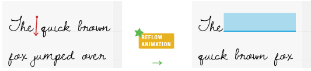

The below handwriting gestures are supported by the widget. A set of delegates is provided so that the input method can take action when a gesture is detected. The gestures' behaviour can be configured according to your needs, except for erase and overwrite gestures. You can also choose to activate or deactivate the gesture detection.
User action |
Gesture |
Description |
Default action |
Code sample |
| Tap |
|
Briefly touch a word |
n/a |
The function setCorrectionMode: is called and the word is selected. |
| Circle |


|
Circle a word |
n/a |
The function setCorrectionMode: is called and the word is selected. |
| Insert |

|
Draw a straight line from top to bottom within a word |
n/a |
The function addSpaceWithWord:atIndex: is called and the word is splitted (to insert a letter for example). |
| Insert |
 |
Draw a straight line from top to bottom between two words |
n/a |
The function setInsertionMode:atIndex: is called and an additional space is added. |
| Join |
|
Draw a straight line from bottom to top
or
Draw a line from one word to the next one |
n/a |
The function removeSpaceWithWord:atIndex: is called and the extra space is removed. |
| Strikethrough |
 |
Draw a line on a word |
Erase | n/a |
| Scratch-out |
 |
Scratch out a word |
Erase | n/a |
| Pigtail |
|
Draw a "curly tail" over the letter or word (intuitive gesture for Asian languages) |
Erase | n/a |
| Overwrite |
 |
Write a letter on top of another |
Overwrite | n/a |
| Underline |
|
Draw a line under a word |
n/a |
The function setCorrectionMode: is called and the word is selected. |
| Return |
 |
Draw a line from top to bottom then from right to left |
n/a |
The function addLineBreakForWord:atIndex: is called and a hard line break is inserted. |
A number of options are provided to customize the UI of the widget's writing area. The widget can be customized via the widget API.